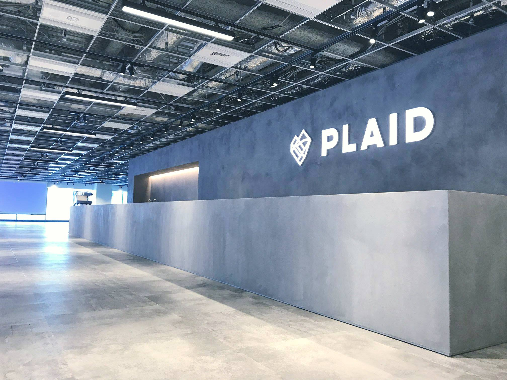

職歴
- 2015年8月
- 株式会社クラウドワークス 経営企画室（インターン） 入社
- 2016年4月
- 株式会社クラウドワークス エンタープライズ事業部 入社
- 2018年7月
- 株式会社プレイド 入社
前職について
インターン時代
全国で130回開催されたクラウドソーシング活用セミナーの事務局機能を社員1名インターン2名で回していました。
正社員時代
クラウドソーシングを活用した法人営業を担当していました。クラウドソーシングを活用してできることはなんでも提案していて、
- サイトDB更新の為のデータ収集
- 機械学習用教師データ収集
- WEBメディアのSEO記事制作
- ロゴ、ポスターなどのデザイン募集コンペ
- アドテク企業の広告審査業務代行
など今考えると一貫性のない提案活動をひたすら繰り返していました。基本的には①クライアントの業務課題をヒアリングして、②それに対してクラウドソーシングで実現できる方法を考えて、③業務構築や制作リソース調達、進行管理などをディレクターと協力して進める、という流れで提案していました。余談ですが福島君とは新卒の頃に一緒に案件を回して炎上したりもしていました。
プレイドでやっていること
採用面接の時はグロースチーム想定でした。今はチーム体制が変わったので未定ですが、お客さんと深く長く付き合っていくようなクライアントワークが好きです。入社前に聞いてはいましたが、初日からテック関連の知識とか使用ツールとかキャッチアップすることが多くて驚いてます。これからが楽しみです！